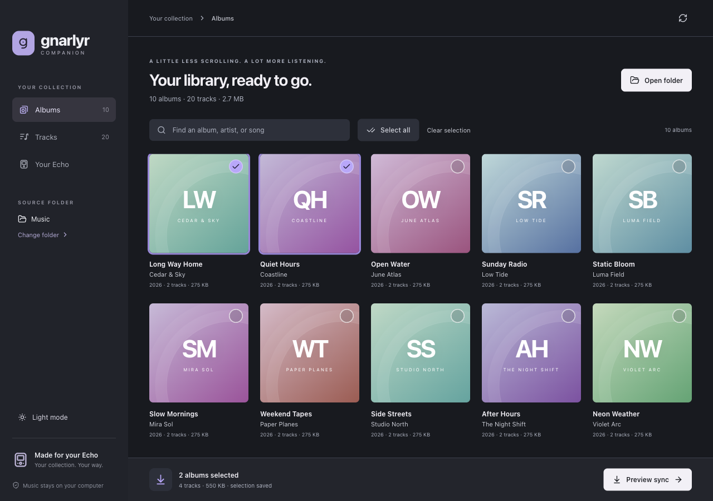
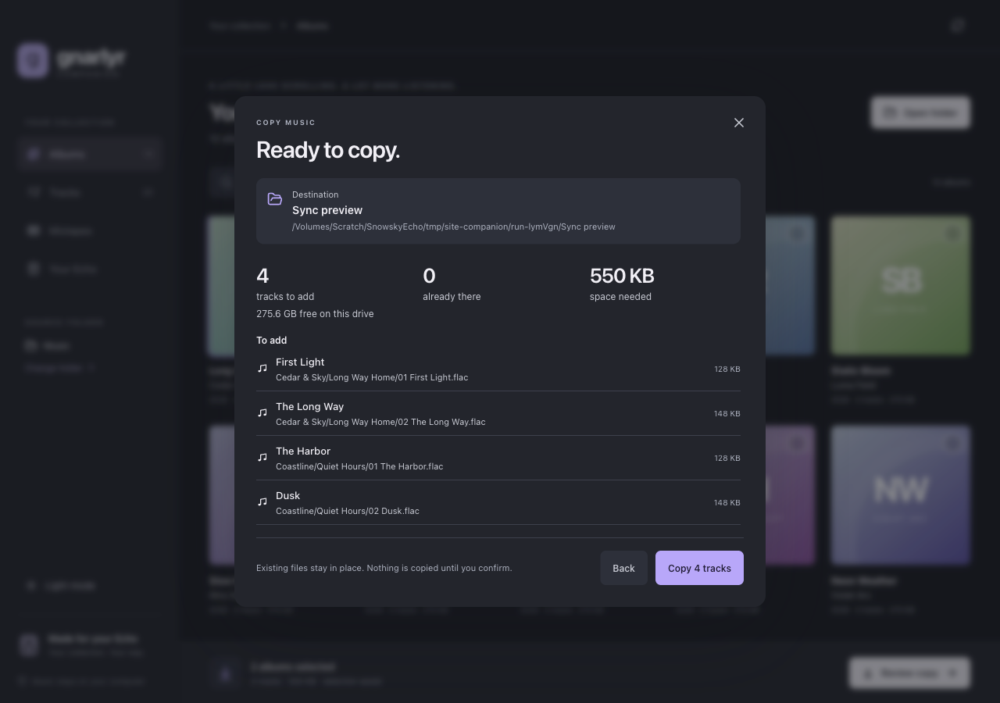
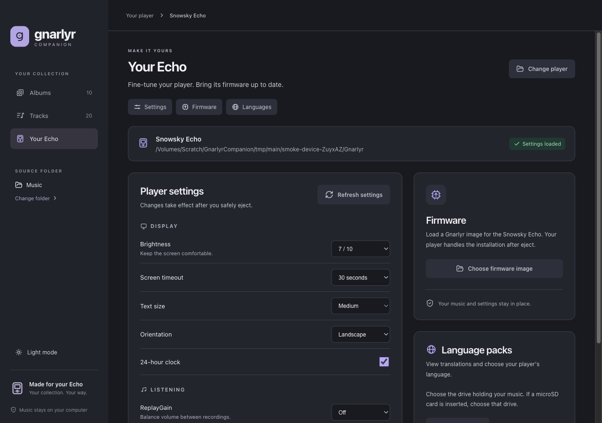
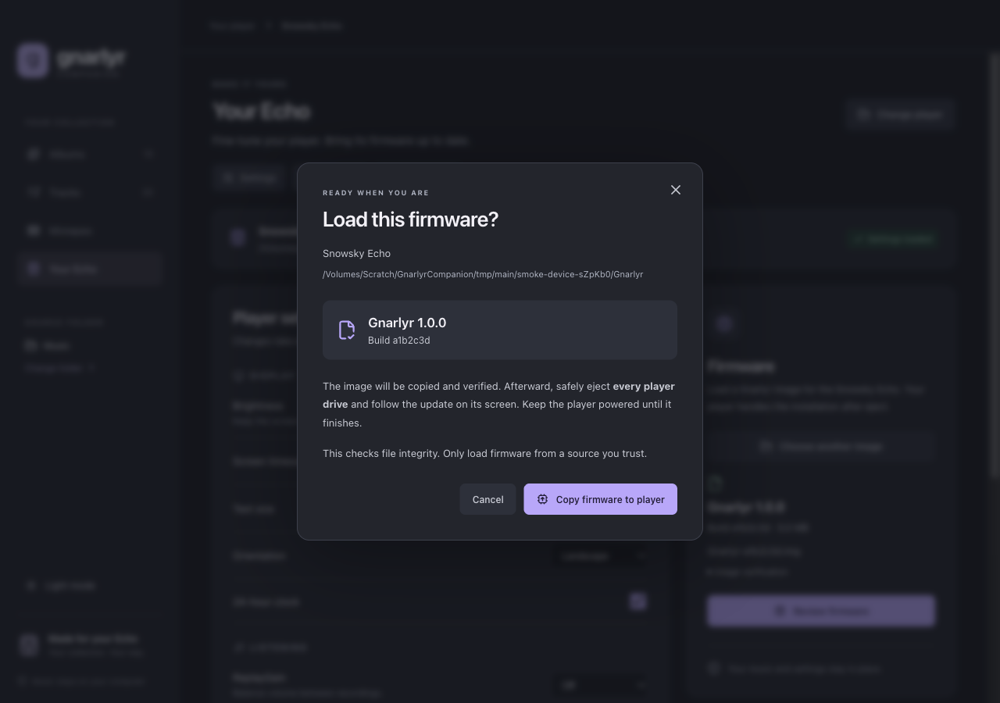
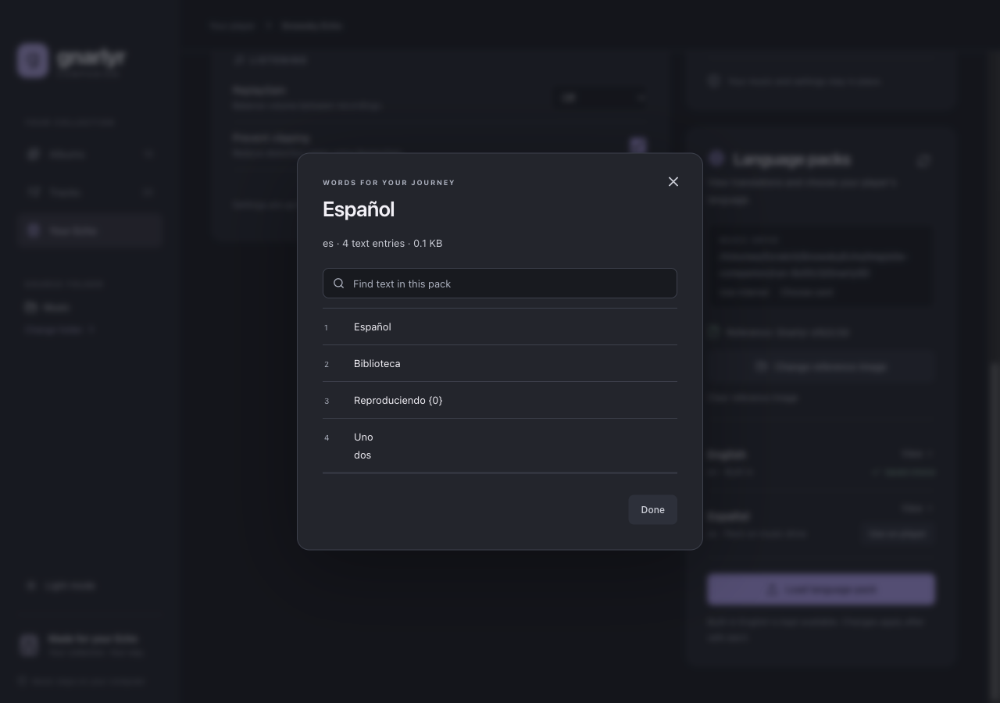
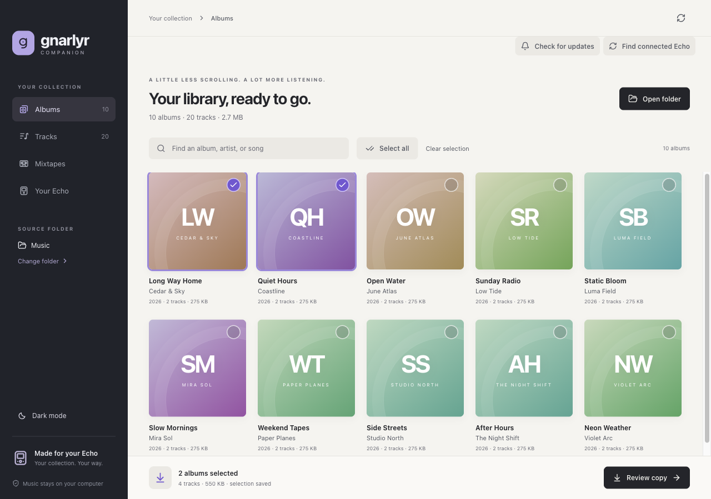

Find an album
Search by album, artist or song. Artwork comes from your music; albums without a cover get an initials design.
Gnarlyr Companion · desktop beta
Browse the albums on your computer, choose your next listening session and give your ECHO some care.
Beta preview with sample music and a demonstration player.

Choose a music folder and browse it as albums or tracks. Your files stay in their original folders.
Search by album, artist or song. Artwork comes from your music; albums without a cover get an initials design.
Choose individual albums or select your search results. Reopening restores your saved library and selections; Refresh checks for changed music.
Browse the music you own, offline. Review a copy to the player’s music drive, or use your computer’s file manager.
The companion keeps a local catalogue so it can reopen your albums without reading every music file again.
Refresh scans in the background, shows progress and reuses metadata for unchanged tracks. Cancel scan stops the refresh and leaves the previous library available. Your music folders stay unchanged.
Choose albums, select Review copy and choose the destination music drive. The review shows missing tracks, files already there, conflicts and the space needed.

Cancel keeps completed, verified files. Choose Review copy again to finish the remaining tracks. A disconnected drive or changed selection needs a fresh review; conflicting files are left for you to resolve. Safely eject every player drive after copying.
For a player already running Gnarlyr, connect in Connect to computer mode and choose its internal drive in Your Echo.

Adjust display, theme and Now Playing choices, or review sound, playback speed, USB and standby settings. The form shows the controls supported by the player’s saved settings. Review changes before saving; the companion keeps a computer backup and verifies the saved file. Safely eject every player drive to apply the changes.
If a drive disconnects, reconnect it and refresh the player. Compatible draft edits stay in place; fields unavailable in the refreshed settings are removed from the draft. The review uses the same setting labels as the form.
Choose a trusted local Gnarlyr image. The companion checks its format and checksum, shows the version and build, and can copy it to internal storage with a readback check. The player installs it after safe eject.

The companion handles later file-copy updates. For the first switch from FiiO firmware, use the installation guide.
View translated text, check a language pack and choose which language the player uses.

Unavailable language controls explain which drive or firmware image to select first.
To make a pack, use the browser language-pack builder and copy the downloaded file over USB. The desktop app imports version 1 packs, the format this firmware reads.
Choose light or dark mode. The companion remembers the appearance you prefer, and a wireframe ECHO opens and closes the app.

The companion is being prepared for public downloads. Installers and release notes will appear on the public Gnarlyr releases page.
This page shows the beta’s current interface and features. Download links will appear here when the installers are ready.